Anime Scenes
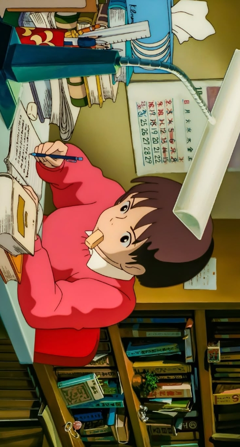
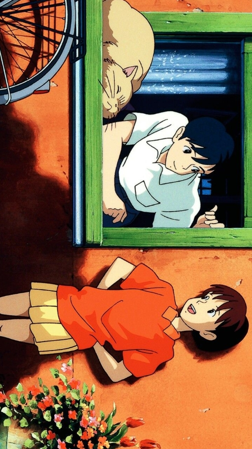
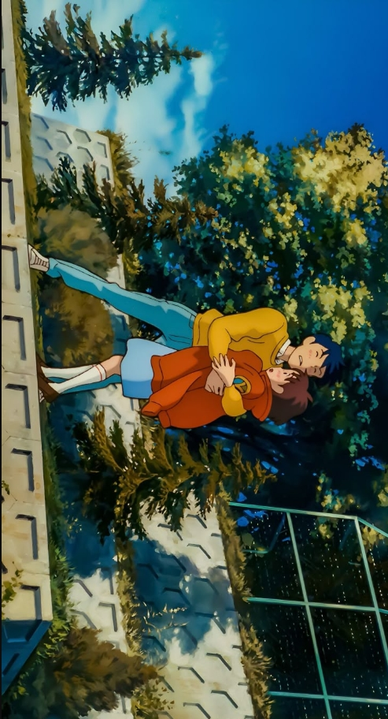
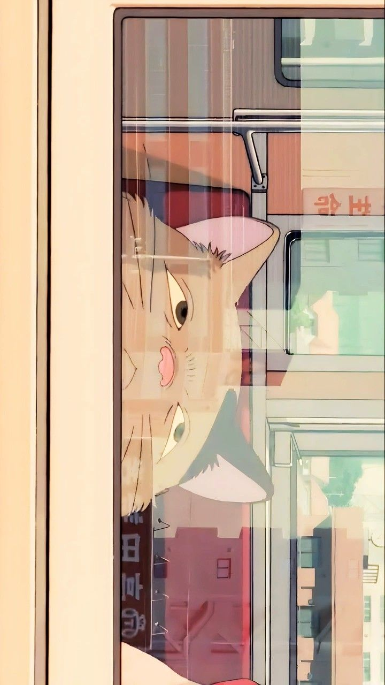
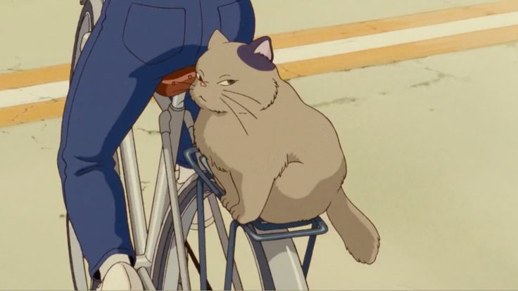
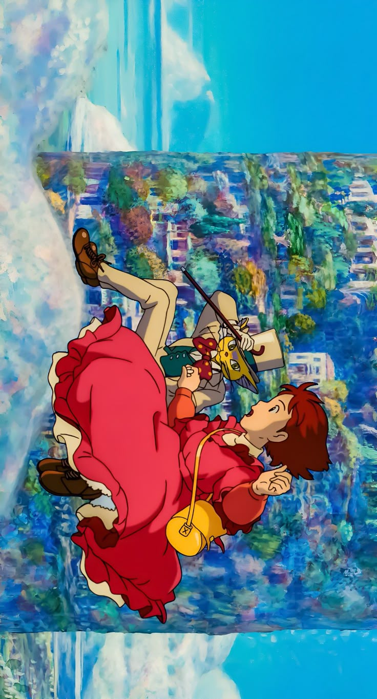
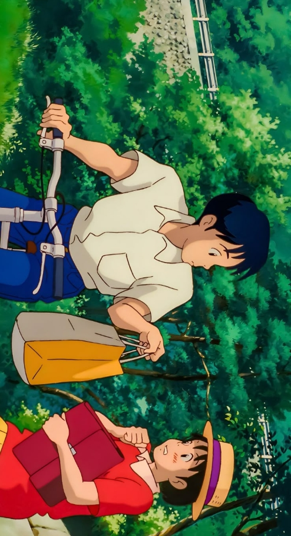
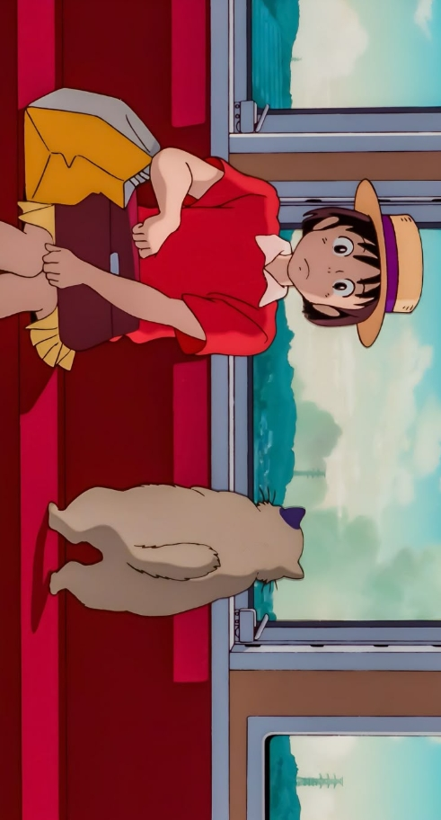
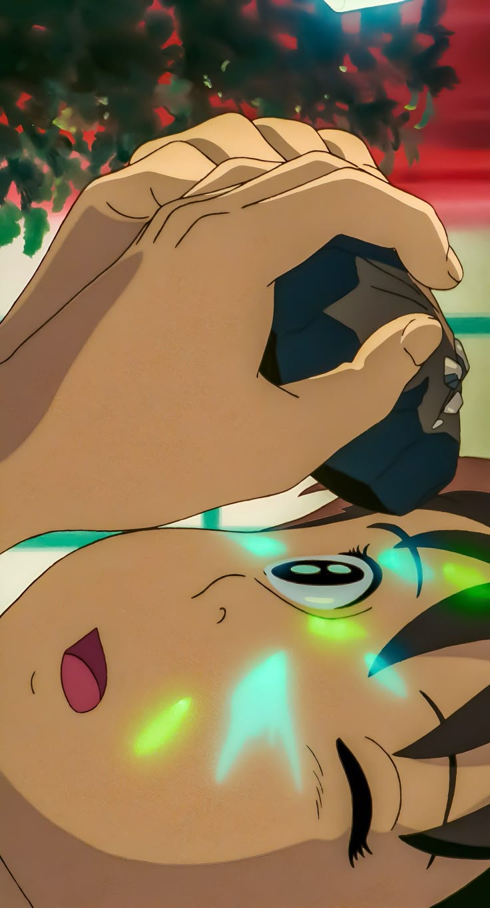
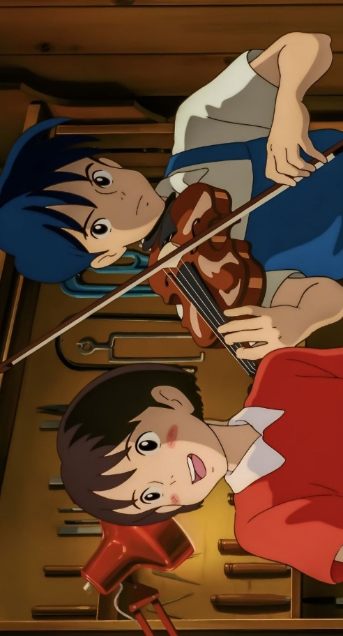
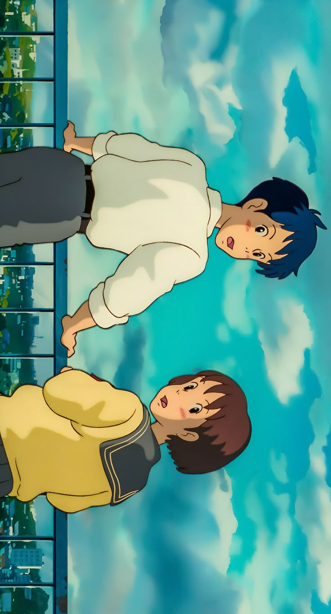
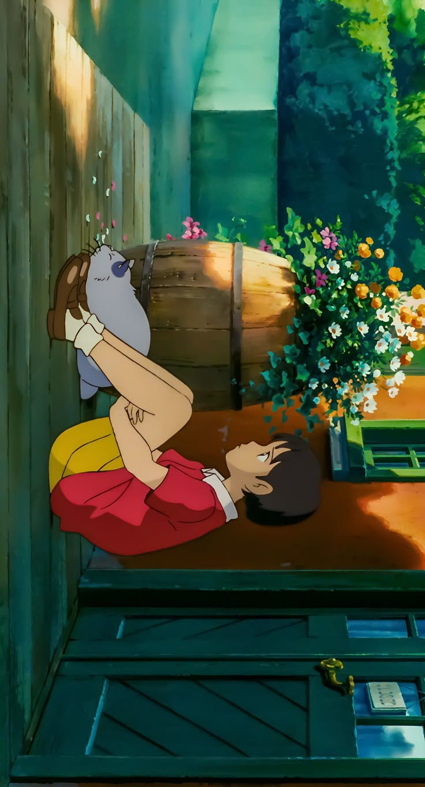
“Concrete roads… I wonder where they lead.”
Anime Studio: Studio Ghibli
Director: Yoshifumi Kondō
Producer: Toshio Suzuki
Distributor: Toho
Rating: ★ 7.9 / 10
Source: Manga
Release Date: July 15, 1995
Duration: 1h 51min
Music by: Yuji Nomi
Status: Movie
Country: Japan
Language: Japanese
Box Office: ~$31 million
Original Author: Aoi Hiiragi